TensorCIM 多芯粒数字存内计算张量处理器零基础精讲：让 CIM 走出“神经网络” TensorCIM: Digital Computing-in-Memory Tensor Processor With Multichip-Module-Based Architecture for Beyond-NN Acceleration（IEEE JSSC, vol.60, no.2, 2025）
之前的 CIM 都在加速“神经网络”。但现实世界还有Beyond-NN 应用：图卷积网络（GCN）和推荐模型（DLRM）——它们由稀疏采集（SpG）和稀疏代数（SpA）组成，规模巨大、需要 FP32 精度、访存密集。本论文（清华尹首一 + 港科大涂锋斌）用 数字 CIM + 多芯粒（MCM）的组合来加速它们，并逐个化解 MCM-CIM 系统的三大新挑战：
- REGM（冗余消除采集管理）：SpG 有强局部性（重复访问、重复归约）——把高频特征和归约结果“住进”CIM，消掉冗余 DRAM/跨芯粒访问和重复归约（DRAM −1.74×、跨芯粒 −3.55×）；
- EOCI（等操作 CIM 初始化）：不规则稀疏让不同宏的有效 MAC 数不同 → 按有效操作数在子阵列级平衡分配 WT/GT → 利用率 17.6%→95.4%；
- ILA-CIM（输入前瞻 CIM）：空闲子阵列前瞻未来输入提前算 → 所有子阵列一直忙（联合加速 5.28×）。
28nm 实测：3.7 nJ/Gather 采集效率、8.3 TFLOPS/W FP32 代数能效、GCN 总能耗省 4.58×。
- SpG 是“查表+求和”，SpA 是“稀疏矩阵乘”：GCN 的聚合=查邻居特征求和（SpG），组合=神经网络变换（SpA）；DLRM 的嵌入层=查表（SpG），FC 层=矩阵乘（SpA）。它们的数据都是稀疏、不规则的。
- 多芯粒（MCM）是 CIM 的“扩容”方案：单芯片装不下大应用，把多个 CIM 芯粒封进一个封装（可混搭工艺、坏芯粒可替换、按需增减）。但芯粒间带宽有限——所以“尽量本地化”成了核心设计目标。
- 稀疏的难点在“负载均衡”：稀疏数据跳过很容易（不读零就行），难的是“跳过之后谁干活”——有的宏算得多、有的算得少（宏间不平衡），有的输入行只激活半片阵列（宏内空闲）。论文的两招（EOCI、ILA）分别治这两个病。
§0.1摘要逐句精读
| 原文（摘录） | 人话解释 |
|---|---|
| “real-world scenarios have more applications beyond just NN processing like GCN and DLRM, which typically consist of sparse gathering (SpG) and sparse algebra (SpA)” | Beyond-NN 应用（GCN/DLRM）由 SpG（稀疏采集）+ SpA（稀疏代数）组成。 |
| “SpG involves repeated off-chip DRAM access, interchiplet access, and redundant reduction operations; SpA suffers from inter-CIM workload imbalance and intra-CIM under-utilization” | 两大新挑战：SpG 有重复访问/重复归约；SpA 有宏间不平衡与宏内空闲。 |
| “the redundancy-eliminated gathering manager (REGM) dynamically maintains frequently accessed features and reduction results in the CIM” | 方案 1：REGM 动态把高频特征/归约结果维护在 CIM 里。 |
| “the equal operation-based CIM initializer (EOCI) calculates effective MAC operations and initializes CIM macros with a balanced inter-CIM workload” | 方案 2：EOCI 按有效 MAC 数平衡宏间负载。 |
| “the input-lookahead CIM (ILA-CIM) architecture looks ahead at future inputs to fully utilize CIM logic” | 方案 3：ILA-CIM 前瞻未来输入，充分利用 CIM 逻辑。 |
| “consumes only 3.7 nJ/Gather for the GCN model, achieving 8.3-TFLOPS/W algebra efficiency at FP32” | 实测：3.7 nJ/Gather、FP32 代数能效 8.3 TFLOPS/W。 |
§0.2论文的核心贡献清单
- 访问张量重排 + SpG 工作负载重分区：最大化特征局部性、最小化跨芯粒访问（聚类后按组分配）；
- REGM 冗余消除采集：高频特征过滤器 + 归约冗余推测器 + 归约复用生成器 + 驱逐 FIFO，REGM 面积/功耗仅 3.6%/5.7%（全芯片）；
- EOCI 等操作初始化：有效操作识别（相交 ID）+ 平衡分配 + CIM 自适应 WT 映射（分片纵向遍历），面积 +1.96%；
- ILA-CIM 输入前瞻：输入前瞻 + FP 对齐 + 输出合并三步流水，附加逻辑面积 +2.64%；
- 实测：3.7 nJ/Gather、8.3 TFLOPS/W（FP32）、GCN/DLRM 能耗省 4.58×/3.52×、NN-only 平均加速 2.61×。
完全零基础：按 01→09 顺序读，重点玩 3 个交互仿真、看 3 个视频，约 60 分钟。这篇是“系统级 + 负载特性分析”的典范——先分析应用（SpG/SpA）再设计架构，读时注意“问题-对策”的一一对应。
§1背景：Beyond-NN 应用 —— GCN 与 DLRM
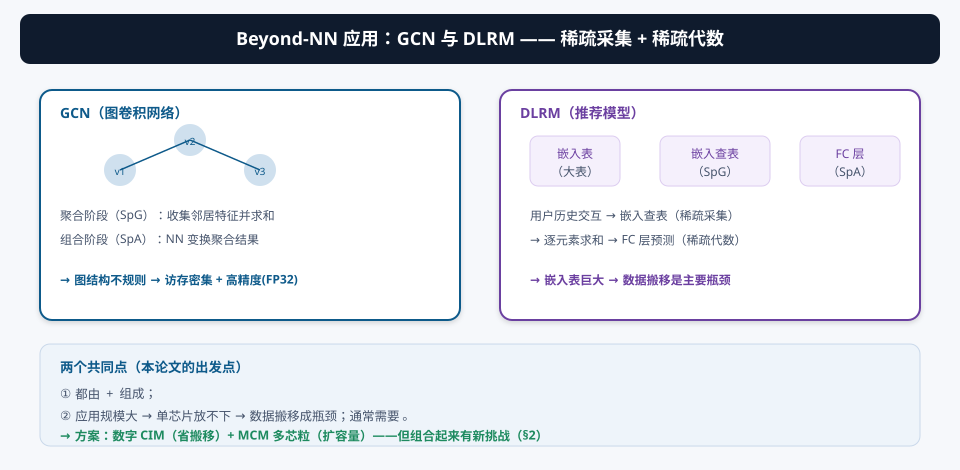
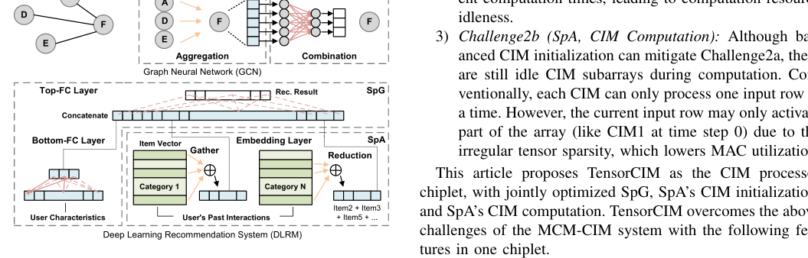
现实世界的数据不都是“规则张量”（图像/音频/文本），还有图（社交网络、知识图谱）和嵌入表（推荐系统）。GCN 在图上做卷积（聚合邻居特征 + NN 组合）；DLRM 查嵌入表生成推荐。两者的共同结构：SpG（按稀疏索引去“取”特征并求和）+ SpA（对取到的张量做稀疏矩阵乘）。它们规模巨大（大图/大表）、需要 FP32 精度 → 数据搬移是主要瓶颈 → 正好是 CIM 的主场。
§2MCM-CIM 系统与新挑战
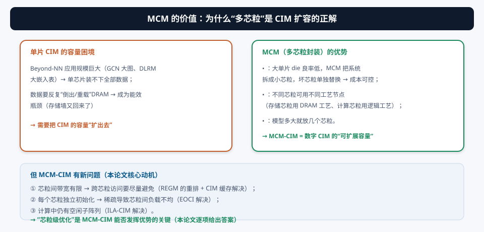
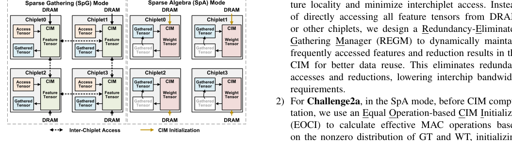
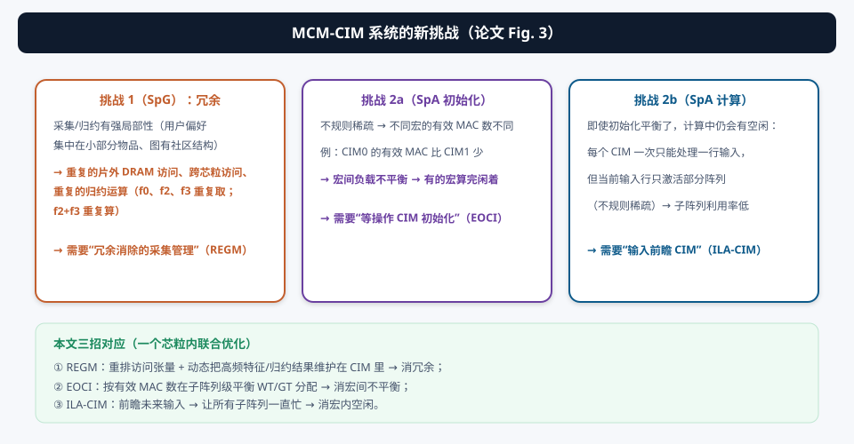
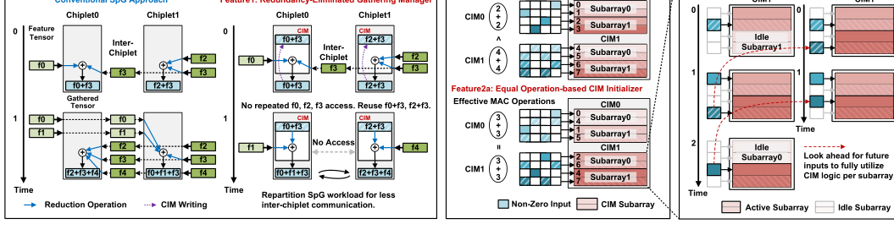
| 挑战 | 本质 | 本文对策 |
|---|---|---|
| ① SpG 冗余 | 重复 DRAM/跨芯粒访问、重复归约（局部性强） | REGM：重排 + CIM 缓存高频特征/归约结果 |
| ② SpA 初始化不平衡 | 不规则稀疏 → 各宏有效 MAC 数不同 | EOCI：按有效操作数平衡子阵列分配 |
| ③ SpA 计算空闲 | 输入行只激活部分阵列 | ILA-CIM：前瞻未来输入保持忙碌 |
§3创新①：REGM —— 冗余消除采集管理
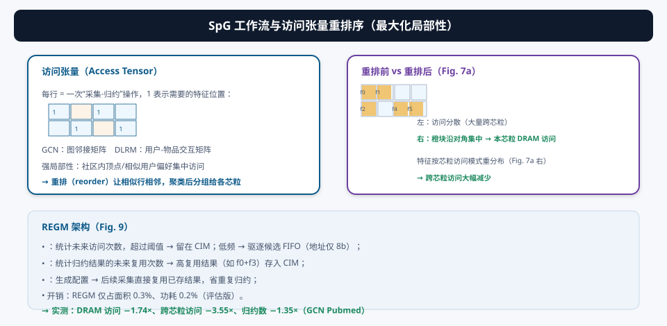
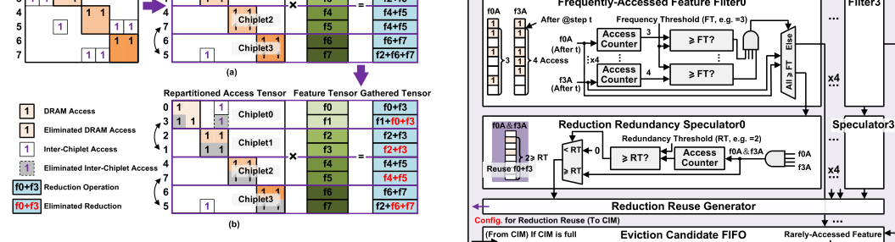
第一步：访问张量重排。SpG 的“访问张量”每行记录一次采集-归约需要的特征位置（GCN = 邻接矩阵、DLRM = 用户交互矩阵）。由于图有社区结构、用户偏好有聚类，把相似行重排到一起（locality-enhancing reordering），再打包成四组分给四个芯粒 → 每个芯粒主要访问本地 DRAM，跨芯粒访问大幅减少。
第二步：REGM 冗余消除。即使重排后，特征仍会被反复取、归约结果仍会被反复算。REGM 的关键部件：
- 高频特征过滤器：统计每个特征未来的访问次数，超过阈值 → 留在 CIM；低频 → 驱逐候选 FIFO（地址仅 8b，开销可忽略）；
- 归约冗余推测器：统计归约结果（如 f0+f3）的未来复用次数 → 高复用结果存入 CIM；
- 归约复用生成器：后续采集直接复用已存结果 → 免重复归约。
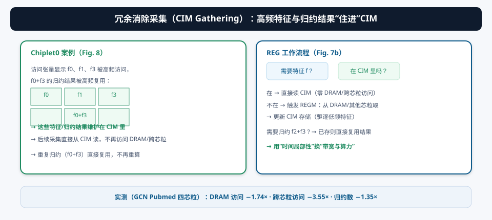
DRAM 访问 −1.74×、跨芯粒访问 −3.55×、归约操作 −1.35×。全芯片面积/功耗占比仅 3.6% / 5.7%。
§4创新②：EOCI —— 等操作 CIM 初始化
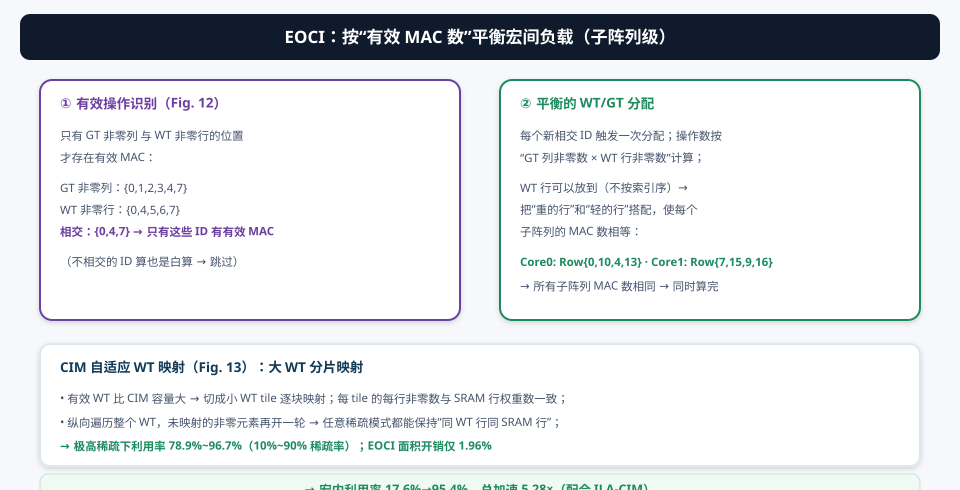
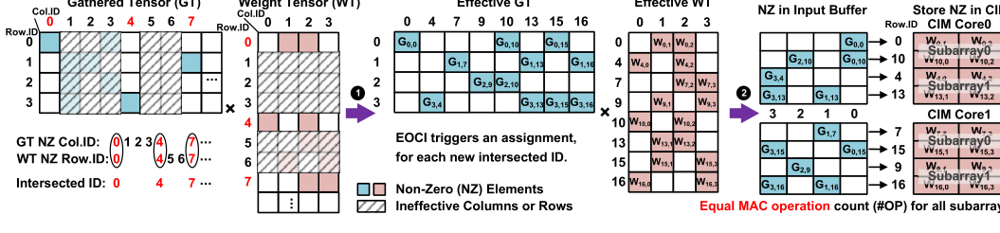
稀疏张量乘法里，只有 GT 非零列 ∩ WT 非零行 的位置才有有效 MAC。EOCI 做两件事：
- 有效操作识别：并行比较器找两个非零 ID 序列的交集；不相交的 ID 直接弹出（避免无谓比较）；
- 平衡分配：每个相交 ID 触发一次分配，按“GT 列非零数 × WT 行非零数”算操作数；WT 行可以放到任意子阵列（不按索引序）→ 把重的行和轻的行搭配，让每个子阵列的 MAC 数相等（Core0: Row{0,10,4,13}、Core1: Row{7,15,9,16}）。
CIM 自适应 WT 映射：有效 WT 比 CIM 大 → 切成小 tile 逐块映射（每 tile 每行非零数 = SRAM 行权重数）；纵向遍历整块 WT，剩余非零再开新轮 → 任意稀疏模式都能保持“同一 WT 行在同一 SRAM 行”，利用率不因行间非零数差异而掉。
宏内利用率从 17.6%（基线）提升到 95.4%（与 ILA 联合）；单独 ILA 是 33.2%；联合总加速 5.28×。EOCI 面积开销仅 1.96%。
§5创新③：ILA-CIM —— 输入前瞻
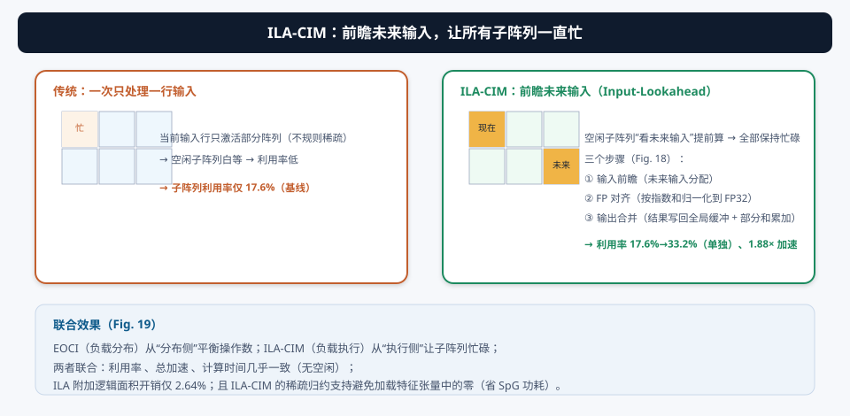
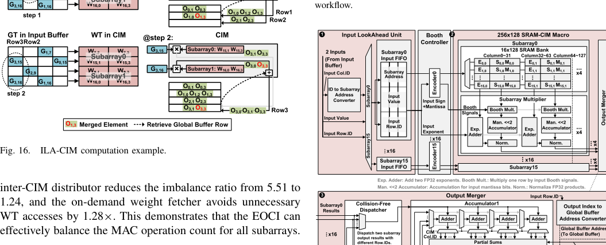
即使初始化平衡了，计算中仍有空闲：每个 CIM 一次只能处理一行输入，而当前输入行因稀疏只激活部分阵列。ILA-CIM 的思路：空闲的子阵列“看未来输入”提前算。计算流水三步：
- 输入前瞻：把未来的输入行分配给空闲子阵列；
- FP 对齐：按“输入指数 + 权重指数”的和把乘积归一化到 FP32（为后续加法）；
- 输出合并：收集各子阵列结果、把输出索引转成全局缓冲地址，与之前的部分和累加并写回。
ILA-CIM 的稀疏归约也复用了同一数据通路：特征张量稀疏时不加载零，直接在 CIM 里做归约 → 省 SpG 的加载功耗。
单独：利用率 17.6%→33.2%、加速 1.88×；与 EOCI 联合：利用率 95.4%、加速 5.28×（子阵列计算时间几乎相同）。附加逻辑面积仅 2.64%。
§6系统架构与 MCM 系统
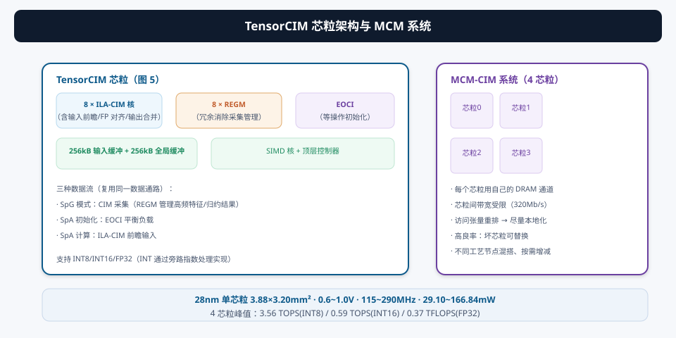
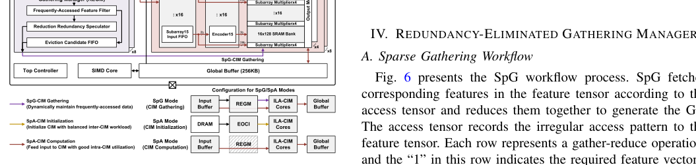
- 8 个 ILA-CIM 核：每个核配一个 REGM（动态采集管理）；支持输入前瞻/FP 对齐/输出合并；
- EOCI：负责 SpA 模式的平衡初始化；
- 256kB 输入缓冲 + 256kB 全局缓冲 + SIMD 核 + 顶层控制器；
- 三种配置复用同一数据通路：SpG 模式（CIM 采集）、SpA 初始化（EOCI）、SpA 计算（ILA-CIM）；
- INT8/INT16/FP32 三种精度：INT 通过旁路指数处理实现（3 个 INT8 权重拼进 FP32 尾数槽）。
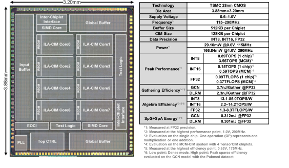
§7实测与对比：28nm 芯片的成绩单
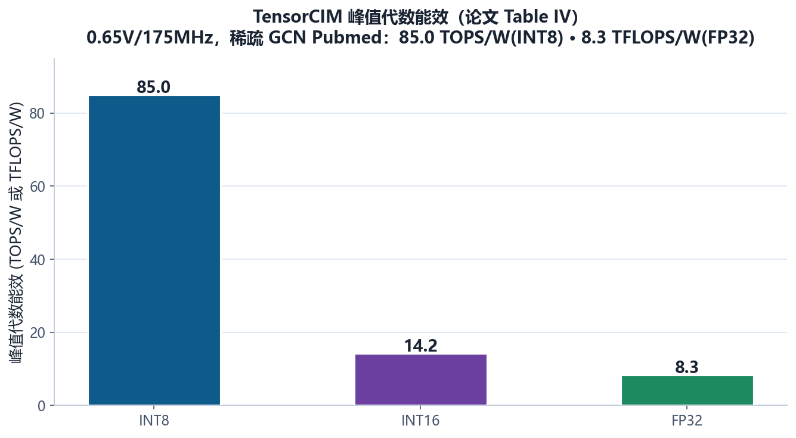
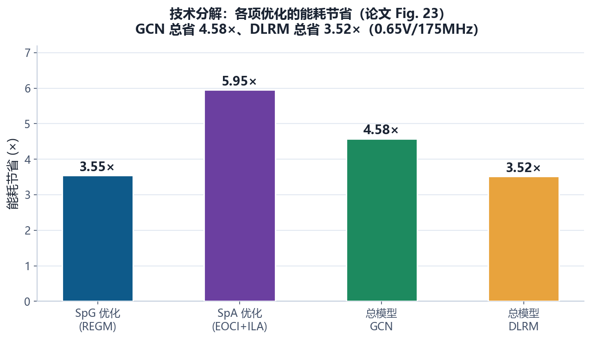
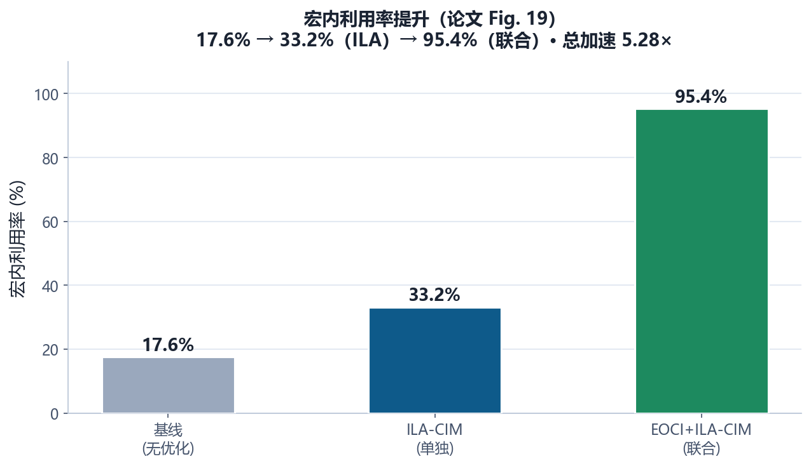
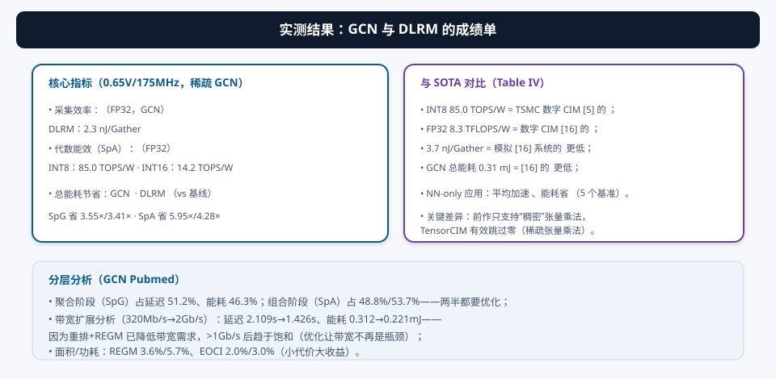
- 芯片：28nm，3.88×3.20 mm²，0.6~1.0V，115~290MHz，29.10~166.84 mW；MCM 四芯粒、320Mb/s 跨芯粒带宽；
- 峰值性能：单芯粒 0.89 TOPS(INT8) / 0.15 TOPS(INT16) / 0.09 TFLOPS(FP32)；四芯粒 3.56 / 0.59 / 0.37；
- 能效：85.0 TOPS/W（INT8，= TSMC 数字 CIM [5] 的 2.17×）、8.3 TFLOPS/W（FP32，= [16] 的 2.24×）；
- 采集效率：3.7 nJ/Gather（GCN）· 2.3 nJ/Gather（DLRM）· 比模拟 [16] 低 9.49×；
- 总能耗：GCN 0.31 mJ（= [16] 的 5.64× 更低）；NN-only 平均加速 2.61×、省能 2.43×。
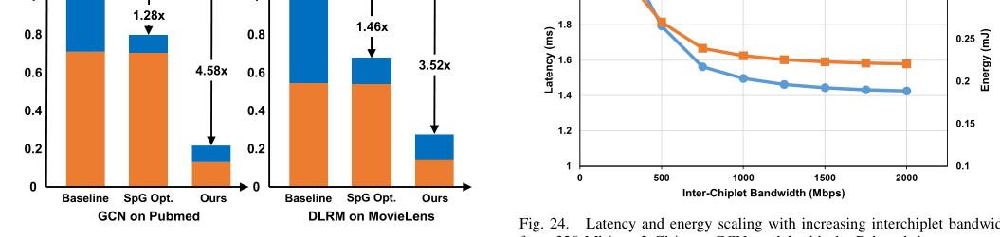
① “能效 = 等效操作数 ÷ 实际能耗”的口径里，被跳过的零也算进操作数——这是论文与前作一致的做法，但会让稀疏模型的能效虚高，跨论文比较要看清口径；② MCM 系统的对比对象 [16] 是“模拟”出来的（不是硅验证），9.49× 这种数字要谨慎引用；③ “SpG 与 SpA 能耗占比相当”（GCN 46%/54%）说明只优化一半不够——这是论文强调“联合优化”的论据。
§8设计思想总结：负载特性驱动的三层协同
① 先分析应用负载，再设计硬件：把 GCN/DLRM 拆成 SpG+SpA，各自找到“数据搬移”与“利用率”两个矛盾点，再逐一设计硬件对策；
② 把“数据本地性”当成第一公民：MCM 带宽有限 → 重排访问张量（软件）+ CIM 缓存高频数据（硬件）双管齐下，把跨芯粒访问从“常态”变成“例外”；
③ 稀疏优化的本质是“负载均衡”：跳过零很容易，难的是让“干活的人”均匀——EOCI 管初始化（分布侧）、ILA-CIM 管执行（执行侧），两个层面都堵住空闲；
④ 小面积大收益：REGM 3.6% + EOCI 1.96% + ILA 2.64% ≈ 8% 面积开销换 4.58× 能耗节省——“每 1% 面积换多少收益”是衡量架构创新的硬标准。
§9未来研究方向 · 术语表 · 参考资料
9.1 未来研究方向
- 更大的 MCM 规模与异构芯粒：4 芯粒 → 8/16 芯粒；计算芯粒（数字 CIM）+ 存储芯粒（3D DRAM，08 号论文路线）混搭，跨芯粒网络（NoC）的拓扑与调度是新的研究空间；
- 图/推荐负载的在线自适应：REGM 的频率/归约阈值目前是离线的。能否根据运行时访问分布在线调整？结合强化学习做“缓存策略”，采集效率更接近上界；
- 训练支持：GCN/DLRM 也有训练需求（图表示学习、推荐模型更新）。把 EOCI/ILA-CIM 扩展到反向传播（转置乘，03 号论文）+ 稀疏梯度，得到“推理-训练一体”的张量 CIM；
- 与 LLM 稀疏注意力结合：LLM 推理的 KV cache、稀疏注意力（top-k 选择）本质也是“稀疏采集”——REGM 的思路可以直接迁移；把 TensorCIM 的 SpG/SpA 框架扩展成“通用稀疏张量引擎”；
- 芯粒间通信的硬件化：REGM 靠“少访问”来绕开带宽瓶颈。更激进的方向：片上光互连/更宽芯粒间总线，让跨芯粒访问不再“贵”——届时重排策略会改变；
- 编译栈自动化：访问张量重排、聚类分组、WT 分片映射目前是手动的。做一个“GCN/DLRM → TensorCIM 配置”的自动编译器（负载分析 → 重排 → 分片 → 调度），软硬协同落地的最后一块拼图。
9.2 术语表
- Beyond-NN 应用
- 神经网络之外的应用（GCN、DLRM），由 SpG + SpA 组成。
- SpG（Sparse Gathering，稀疏采集）
- 按稀疏索引取特征并归约（GCN 聚合、DLRM 嵌入查表）。
- SpA（Sparse Algebra，稀疏代数）
- 稀疏张量乘法（GCN 组合、DLRM FC 层）。
- GCN（Graph Convolutional Network）
- 图卷积网络。
- DLRM（Deep-Learning Recommendation Model）
- 深度学习推荐模型（嵌入表 + FC）。
- MCM（Multichip-Module）
- 多芯粒封装：高良率、混合工艺、按需扩展。
- 芯粒（Chiplet）
- MCM 中的单个芯片。
- 访问张量（Access Tensor）
- 记录稀疏访问模式（每行=一次采集-归约）。
- REGM（Redundancy-Eliminated Gathering Manager）
- 冗余消除采集管理：CIM 缓存高频特征/归约结果。
- EOCI（Equal Operation-based CIM Initializer）
- 等操作 CIM 初始化：按有效 MAC 数平衡子阵列。
- ILA-CIM（Input-Lookahead CIM）
- 输入前瞻 CIM：空闲子阵列提前算未来输入。
- 有效操作识别
- GT 非零列 ∩ WT 非零行的位置才是有效 MAC。
- CIM 自适应 WT 映射
- 大 WT 分片、纵向遍历，保持同 WT 行同 SRAM 行。
- 采集效率（Gathering Efficiency）
- 平均生成一个归约结果的能耗（nJ/Gather）。
- 代数能效（Algebra Efficiency）
- 稀疏张量乘法的能效（TFLOPS/W）。
9.3 参考资料
- Y. Wang, Z. Wu, W. Wu, L. Liu, Y. Hu, S. Wei, F. Tu, S. Yin, “TensorCIM: Digital Computing-in-Memory Tensor Processor With Multichip-Module-Based Architecture for Beyond-NN Acceleration,” IEEE JSSC, vol. 60, no. 2, pp. 734-746, Feb. 2025. DOI: 10.1109/JSSC.2024.3406569
- F. Tu et al., “TensorCIM: A 28nm 3.7nJ/gather and 8.3TFLOPS/W FP32 Digital-CIM Tensor Processor for MCM-CIM-Based Beyond-NN Acceleration,” ISSCC 2023, pp. 254-256.（会议版 [17]）
- F. Tu et al., “A 28nm 29.2TFLOPS/W BF16 and 36.5TOPS/W INT8 Reconfigurable Digital CIM Processor…,” ISSCC 2022, pp. 255-257.（数字 CIM 对比 [16]）
- H. Zhu et al., “COMB-MCM: Computing-on-Memory-Boundary NN Processor…,” ISSCC 2022, pp. 250-252.（MCM-CIM 前作 [28]）
- J. Yue et al., “A 28nm 16.9-300TOPS/W Computing-in-Memory Processor Supporting Floating-Point NN Inference/Training…,” ISSCC 2023, pp. 1-3.（[13]）
- T. N. Kipf and M. Welling, “Semi-supervised classification with graph convolutional networks,” ICLR 2017.（GCN）